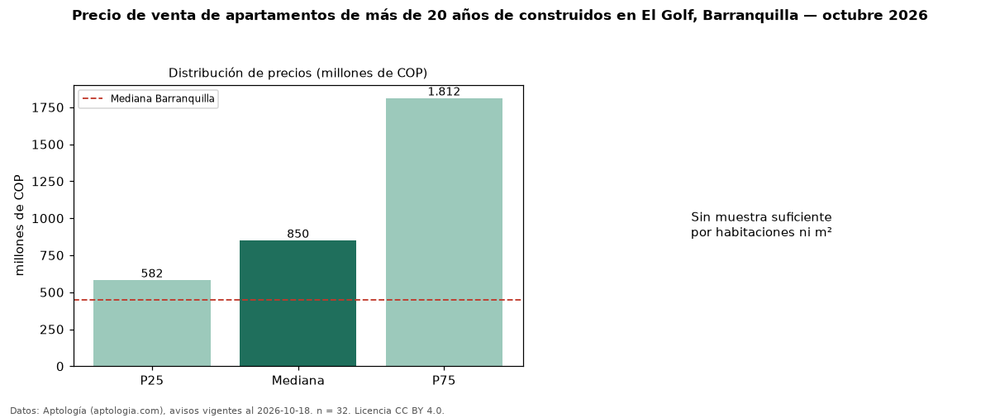

Precio de venta de apartamentos de más de 20 años de construidos en El Golf, Barranquilla — octubre 2026
COP 850 millones es el precio mediano de apartamentos de más de 20 años de construidos en venta en El Golf, Barranquilla (n = 32 avisos). Frente a la mediana de todos los apartamentos en venta de El Golf (COP 1,31 mil millones, n = 163), queda 35 % por debajo; este segmento reúne el 20 % de esos avisos. La mitad central de los avisos va de COP 582 millones a COP 1,81 mil millones (razón 3,1), una dispersión alta. El área mediana anunciada es 320 m². El segmento con más oferta es el de 3 o más habitaciones (29 avisos, mediana COP 1,10 mil millones). La administración mediana declarada es COP 1,84 millones al mes (n = 26). El estrato más frecuente es 6 (88 % de los avisos con estrato). La mediana de todos los apartamentos en venta de Barranquilla es COP 450 millones (+89 % de diferencia). Datos: Aptología (aptologia.com), CC BY 4.0 — https://www.aptologia.com/venta/barranquilla/el-golf. Archivos: PDF, CSV con las cifras y gráfica PNG.

| Avisos únicos | 32 |
|---|---|
| Percentil 25 | COP 582.500.000 |
| Mediana | COP 850.000.000 |
| Percentil 75 | COP 1.811.600.000 |
Fuente: avisos vigentes de portales inmobiliarios recopilados por Aptología, deduplicados (mínimo 30 avisos únicos por celda). Precios pedidos, no cerrados. Fecha: 2026-10-18.